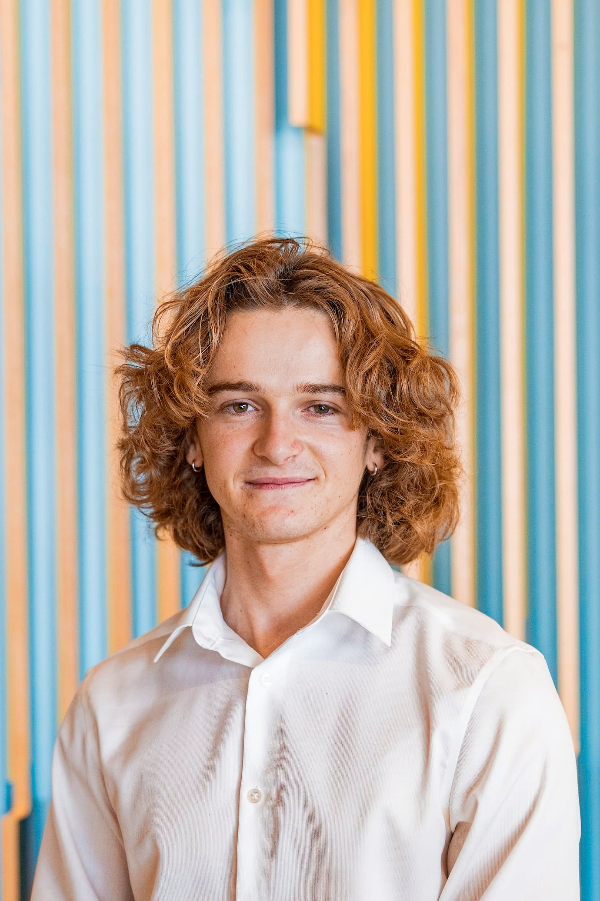
Hello, I'm Yann. I'm an Electrical and Computer Engineering student focusing on Machine Learning and AI. Below are some of my key projects and research highlights.
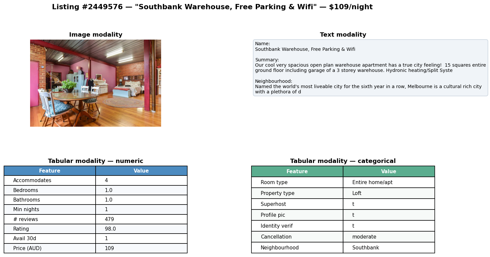
Multimodal Gaussian Process Fusion (Spring 2026)
- Ran a 9,703-configuration ablation of multimodal GP fusion (9 embedders × 3 GP scaling methods × 5 ensemble modes); a data-pipeline fix raised best test R² from 0.629 to 0.662.
- Built a spectrally-normalized MLP over Gemini text embeddings to extract a 128-d GP input, reaching test R² 0.6685 / NLPD 0.57.
Research with K. Polyzos, Schmidt AI in Science (UCSD); manuscript in preparation
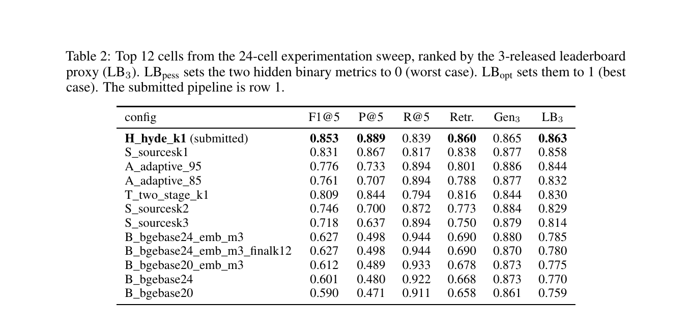
Hybrid RAG over Technical Docs (Spring 2026)
- Engineered a hybrid RAG pipeline — hierarchical chunking, bge-m3 dense + BM25 sparse fused by reciprocal-rank fusion, then a cross-encoder reranker — reaching F1@5 0.853 / Precision@5 0.889.
- Designed a HyDE query stage with parent-chunk expansion and a 1,700-token context packer.
Team project (2 people)
View PaperModular Flashcard Maker (Spring 2025)
- Built a locally accessible browser interface combining frontend and backend for flashcard generation.
- Runs entirely on your machine using Ollama to interface with downloaded language models.
- Supports integration with local models via Ollama, including
llama3.1:latest. - Modular architecture for swapping models and customizing few-shot prompts.
- Free and offline: once set up, it's perfect for quick use when you're in a bind—no internet required.
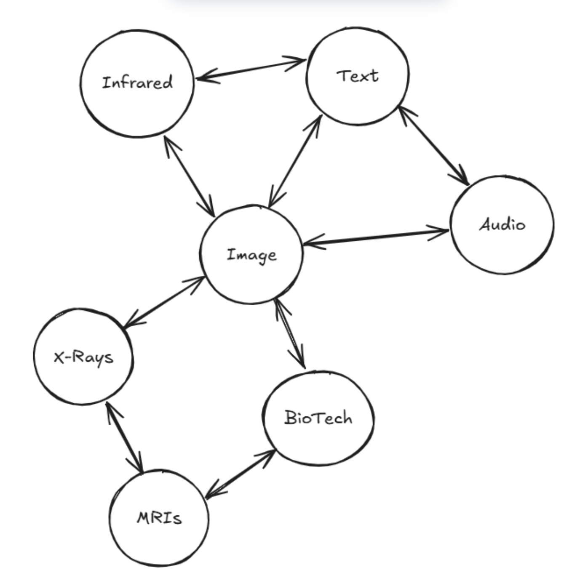
Multimodal Embedding Alignment (Winter 2025)
- A research-based project developing a framework to bridge modalities using contrastive learning.
- Focused on aligning audio, image, and text embeddings using deep learning and projection heads.
Team project with Michael
View on GitHubView Paper
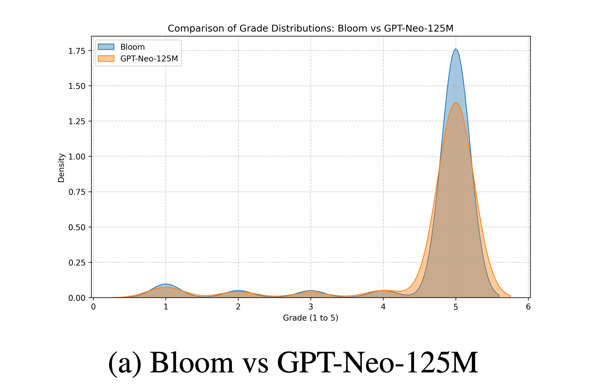
NLP: LLM → SLM Distillation for Spanish Summarization (Winter 2025)
- Distilled large language model knowledge into a lightweight model for Spanish text summarization.
- Evaluated downstream performance and interpretability across tasks.
View Paper
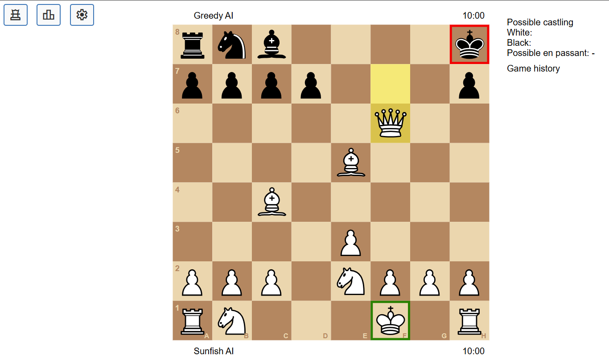
Reinforcement Learning: Chess Bot RL Environment (Winter 2025)
- Created a modular and easy-to-modify backend/frontend design for testing different algorithms in chess.
- Provided multiple evaluation metrics for AI vs AI, including an ELO system.
Team project with Enzo, Shashwat, and Luis
View on GitHubView Paper
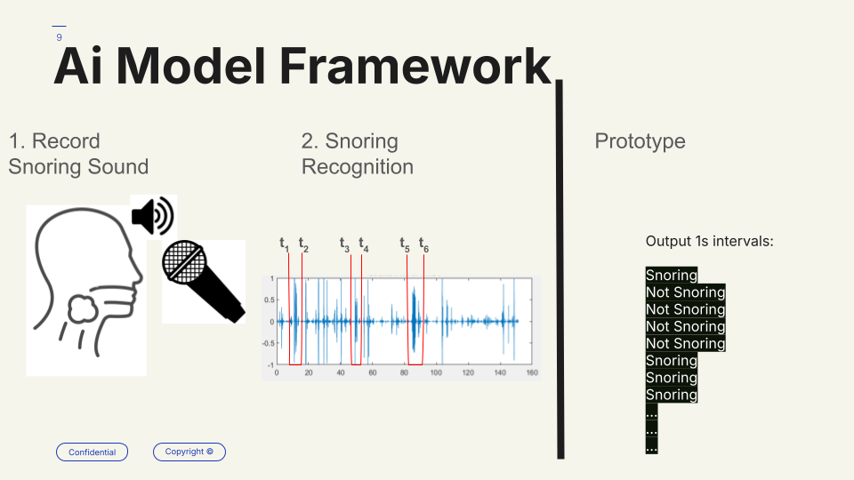
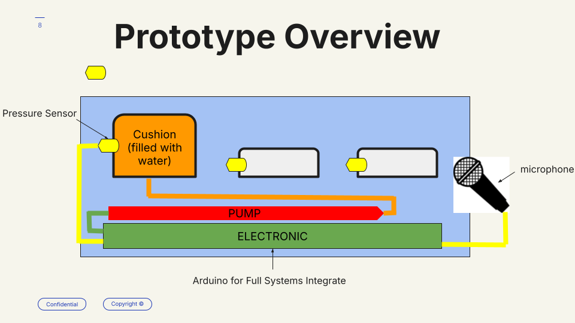
Smart Pillow – Anti-Snoring Product Pitch (Winter 2025)
- A business-focused engineering project involving the design and pitch of a smart anti-snoring pillow.
- Includes prototype development and market research.
Team project with Fabien and Basile
Link to GitHubView Presentation
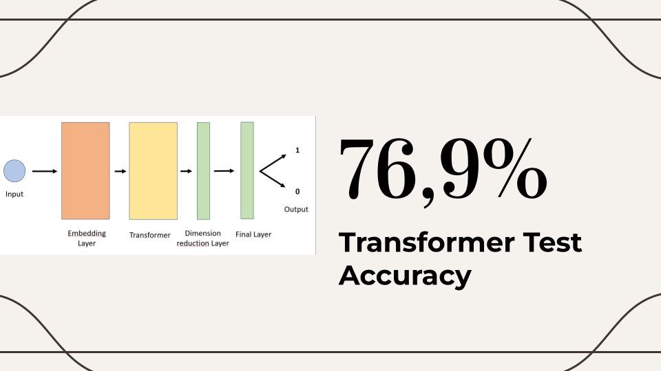
ML for Tweet Classification (Fall 2024)
- Placed Second in Kaggle Competition for the Project.
- Supervised learning project to classify whether a tweet was sent during a crucial moment in a soccer match.
- Explored feature extraction, model selection, and evaluation metrics.
Team project with Violette
View on GitHubView Kaggle Leaderboard
View Paper
View Presentation
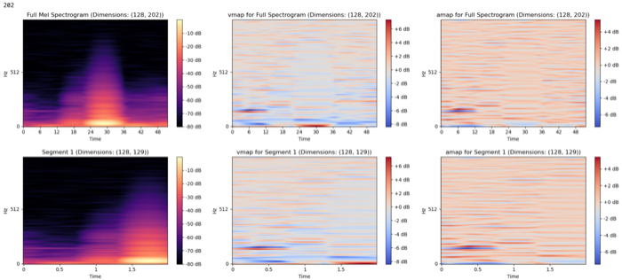
Medical Swallow Detection (Summer 2024)
- Designed an end-to-end pipeline classifying swallowing events from the public UCL sEMG dataset — spectrogram generation and a CNN segmenter over 8,459 labeled segments.
- Built data-augmentation and an audio segmenter; ran leakage-checked, MLflow-tracked ablations.
View Presentation
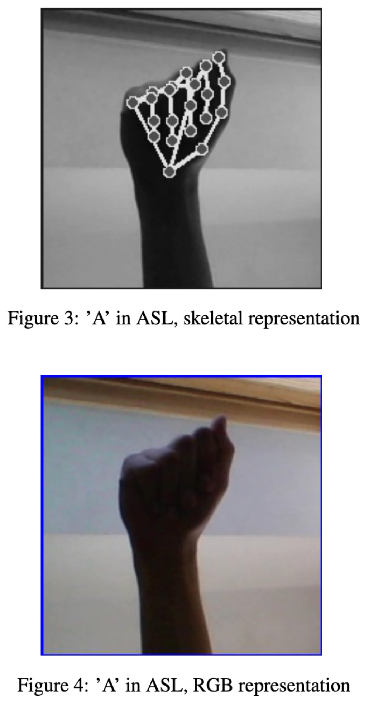
ASL Recognition CNN (Winter 2024)
- A ResNet-based approach for classifying American Sign Language letters using skeletonized hand images.
Team project with Sebastian
View on GitHubView Paper
View Video on Canva
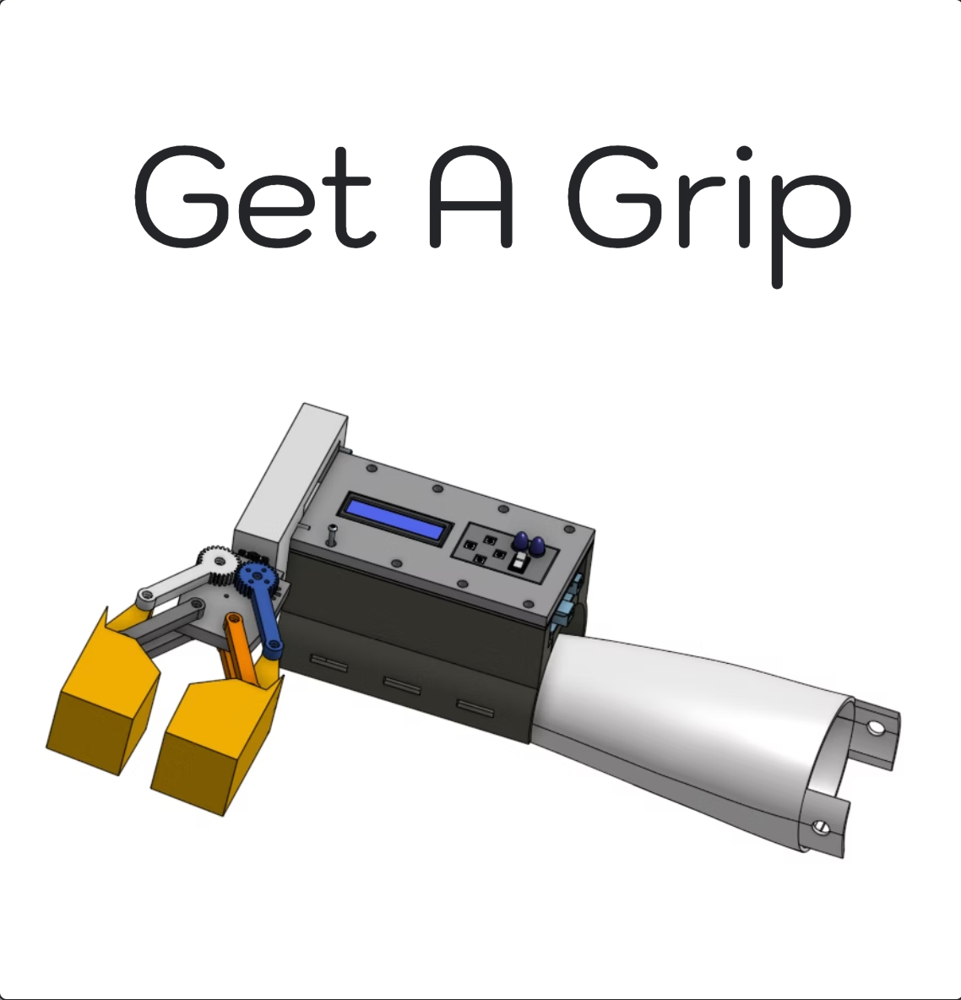
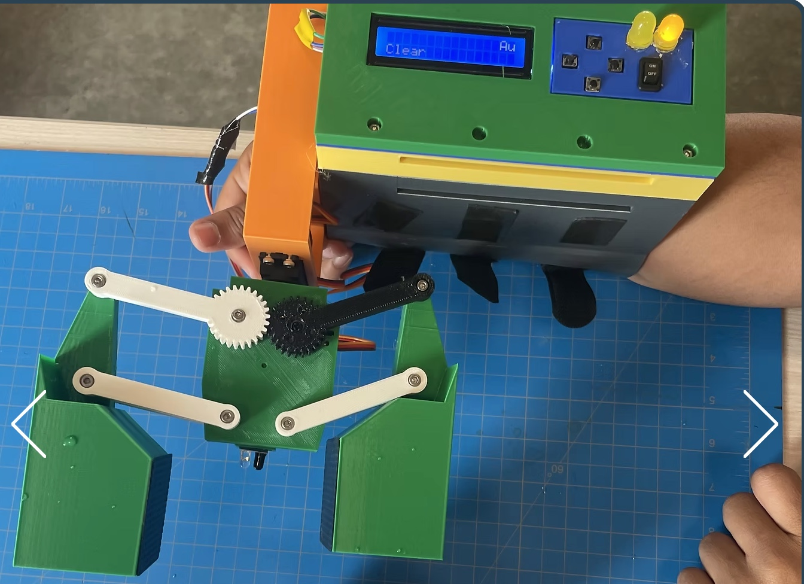
Gripper Arm – Assistive Device (Spring 2023)
- Forearm-mounted device assisting those with limited hand mobility.
- PCB design, CAD, and embedded C code.
Team project with Quoc and Tahseen
Project Site